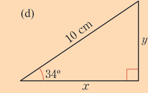
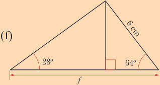
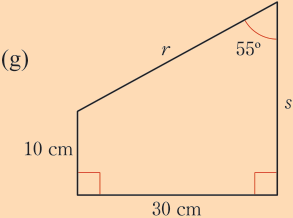
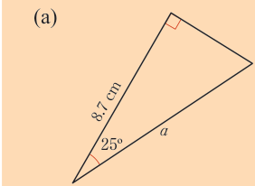
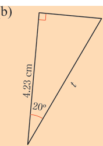
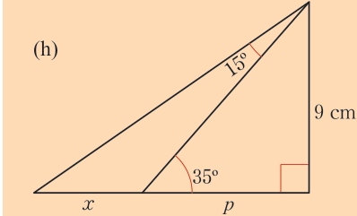
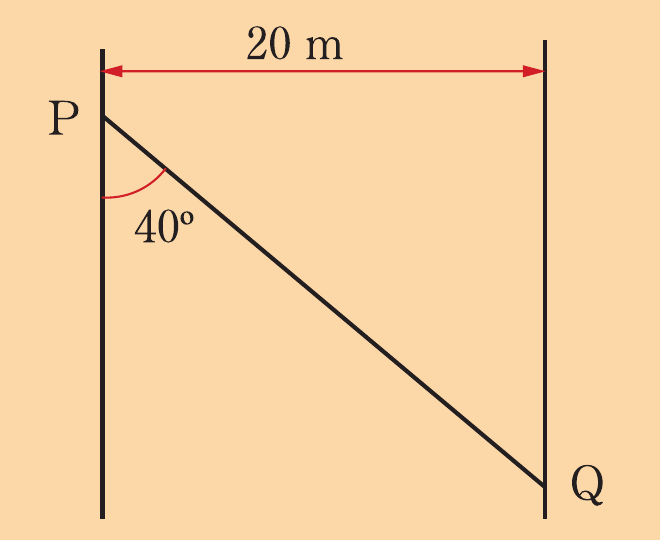
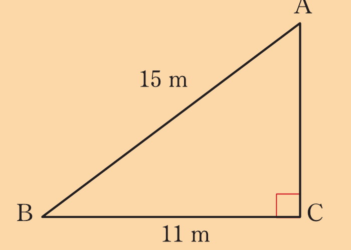
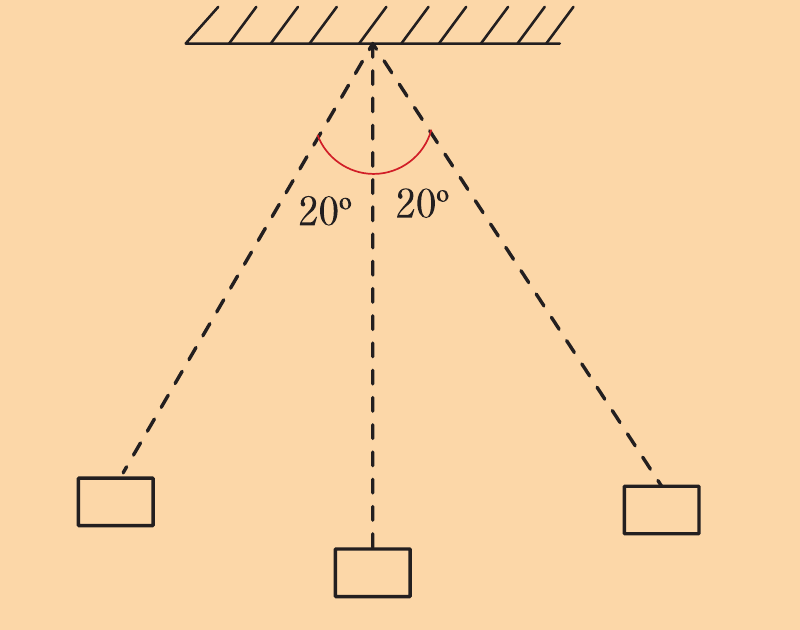

Exercise 8.5
1. Use a scientific calculator to find the value in each of the following trigonometric ratios correct to 4 significant figures:
If y is an acute angle, use a calculator to find the value of y in each of the following:
Find the values of x and y in each of the following, giving your answer correct to 1 decimal place.
![Three right-triangle diagrams labeled (a), (b), and (c). In (a), the hypotenuse is 12 cm, the base is x, the vertical side is y, the right angle is at the lower right, and the lower-left angle is 40°. In (b), the corresponding layout has hypotenuse 3.1 cm, base x, vertical side y, a right angle at the lower right, and a lower-left angle of 56°. In (c), the triangle is rotated so the hypotenuse slopes down to the right and is labeled 1 m; the base is x, the left vertical side is y, the right angle is at the lower left, and the lower-right angle is 60°.](images/pg190_im007.png)



In each of the following triangles, find the values of the unknown letters:




A water tap can be reached from Juma’s house by walking 100 m North and then 30 m East.
Find the bearing (direction) of the water tap from Juma’s house.
A river with parallel banks is 20 m wide.
Find the distance PQ if P and Q are two points on either side of the river as shown in the following figure.

7. An inclined iron rod AB of length 15 m has a wire tied at A so as to be used to lift loads at point C which is 11 m from B as shown in the following diagram.
Find the angle that the iron rod makes with this wire.


8. A 30 cm long pendulum swings back and forth through an angle of 20° on each side as shown in the following figure.
How high does the lower end of the pendulum rise?
9. The diagonal of a rectangle makes an angle of 39° with the longer side.
Find the width of the rectangle if its length is 50 cm.
10. A car which was originally at sea level travelled a distance of 400 m uphill inclined at an angle of 28° to the horizontal.
(a) Find the height the car attained above sea level after travelling 400 m.
(b) Find the horizontal distance travelled correct to the nearest metre.
11. The depth of a straight underground mine tunnel is 240 m.
The end of the mine tunnel is 200 m horizontally from the entrance.
What angle does the tunnel make with the horizontal?
12. A technician is designing a ramp to load a heavy machine onto a platform.
The platform is 1.5 m high and the ramp needs to be at an inclination of 20° to ensure safe loading.
Determine the length required and the horizontal distance it will cover.